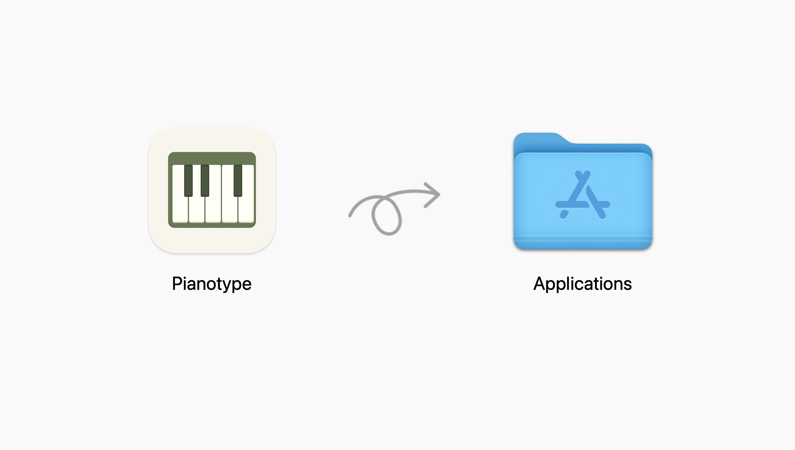

방구석 피아니스트 되기
키보드로 치는 피아노 앱. 업무 메일, 사직서, 카톡, 슬랙까지.
어떤 순간에도 우아함을 잃지 마세요.
직접 연주해보기
설치 안내
Pianotype-1.2.dmg를 열고 앱 아이콘을 Applications 폴더로 드래그하세요.
- 개인이 배포하는 앱이라 처음 열 때 Apple이 실행을 차단할 수 있어요.
다운로드한 앱이 맞는지 확인한 뒤 ‘시스템 설정 → 개인정보 보호 및 보안 → 그래도 열기’를 선택하세요.
- 입력 모니터링에서 Pianotype을 허용하고 앱을 다시 연 뒤 ‘연주 켜기’를 누르세요.